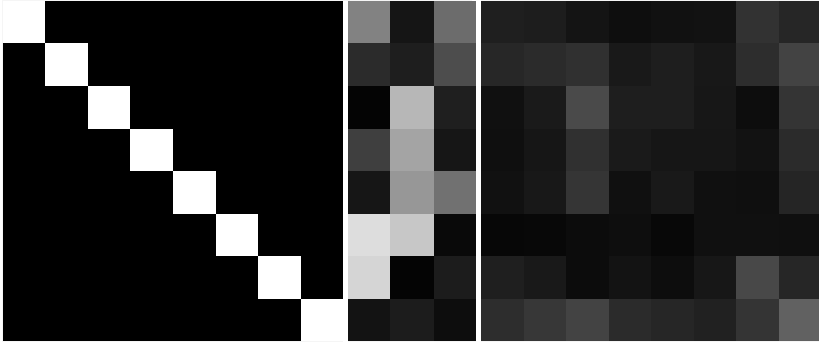
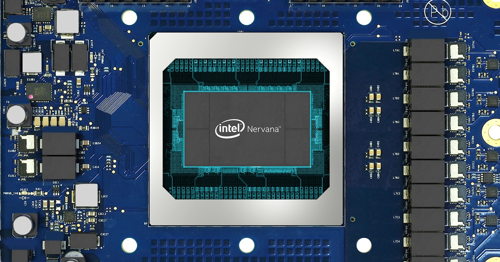

Aprendizagem Profunda
2 - Deep Learning
Ludwig Krippahl
Deep Learning
Summary
- Backpropagation
- Stochastic Gradient Descent
- Deep model architectures
- Unstructured data
- Why the success now?
- Some examples of deep learning with unstructured data
Deep Learning
Backpropagation
Backpropagation
- Neuron: linear combination of inputs with non-linear activation

Backpropagation
- To propagate error through weight parameters we need derivatives.
- E.g. sigmoid activation

Single Neuron
Training a single neuron
- Minimize quadratic error between class and output
- Like perceptron, present each example and adjust weights.
- Gradient of the error wrt
w :−δEjδwi=−δEjδsjδsjδnetjδnetjδwi
Single Neuron
- Update rule (
η generally between 0.1 and 0.5): - Intuitive explanation:
Deep Learning
Stochastic Gradient Descent
Stochastig Gradient Descent
- Online learning: one step per example, in random order
Stochastig Gradient Descent
- Batch training: add
Δwji for batch, then update
Stochastig Gradient Descent
Single neuron
- A single neuron is a linear classifier:

Deep Learning
Multilayer Perceptron
Multilayer Perceptron
- Multilayer Perceptron is a fully connected, feed forward, ANN
- Layers chain nonlinear transformations
Multilayer Perceptron
- Fully connected
- Feed-forward
- Input layer:
x1,x2 - Hidden layer(s):
y(1)1,y(1)2 - Output layer:
y(2)1
Multilayer Perceptron
Training a Multilayer Perceptron
- Output neuron
n of layerk receives input fromm from layeri through weightj - Same as single neuron but using output of previous instead of
x - With sigmoid activations:
- Compute
δ for each neuron
Multilayer Perceptron
Training a Multilayer Perceptron
- For a weight
m on hidden layeri , we must propagate the output error backwards from all neurons ahead - Gradient of error w.r.t. weight of output neuron:
- Propagate back the errors of all forward neurons (and compute
δ ):
Multilayer Perceptron
Training a Multilayer Perceptron
- Intuitive explanation:
Multilayer Perceptron
Backpropagation Algorithm
- (MLP, sigmoid activation, quadratic error)
- Propagate the input forward through all layers
- For output neurons compute
- Backpropagate errors to back layers to compute all
δ - Note:
wpk are weights of "front" neurons connecting to neuroni - Update weights (for forward layers,
x iss of back layer)
Multilayer Perceptron
Backpropagation Algorithm, general case
- Propagate the input forward through all layers
- Compute activations
- For output neurons compute
- Loss function
- Derivatives of loss function
- Backpropagate derivatives of loss function to back layers
- Update weights using the computed derivatives
This can be generalized
- Different architectures
- Different activation functions
- Different loss functions, regularization, etc
Multilayer Perceptron
Neural Networks stack nonlinear transformations
- We can go beyond linear classifiers by stacking layers
Multilayer Perceptron
Neural Networks stack nonlinear transformations
Multilayer Perceptron
Neural Networks stack nonlinear transformations
- We can build powerful models stacking neurons
- (There are many other details, but this is the core idea)
Deep Learning
Shallow models
Shallow models
Linear models
- Can only separate linearly separable classifiers
- Require careful (manual) choice of features

Shallow models
With nonlinear transformation
- In theory, can approximate any function
- E.g. Gaussian kernels, 1 hidden layer MPL
- But are sensitive to irrelevant information in input, requiring a good choice of features
- E.g. position and orientation of images, sound pitch, ...

Deep Learning
Deep classifiers
Deep classifiers
ANN have a nonlinear response because of layers
- Single neurons are linear classifiers, similar to logistic regression
- But deep networks can be extremely nonlinear, combining different representations

Aphex34, CC BY-SA 4.0
Deep classifiers
ANN have a nonlinear response because of layers
- Single neurons are linear classifiers, similar to logistic regression
- But large networks can be extremely nonlinear, combining different representations
Deep classifiers
ANN have a nonlinear response because of layers
- These layers can find better representations than a single nonlinear transformation and the representations are learned
Zeitler, 2014, Visualizing and Understanding Convolutional Networks
- More efficient representations
- Instead of one transformation to arbitrarily large space
- Effectively automates feature extraction
Deep Learning
Features and Data
Features and Data
Structured Data: conforms to a (tabular) data model
- Well defined semantics, within some context
- e.g. business model, hospital, banknotes
- All examples have the same set of attributes
- With specified relations and allowed values
- Each value "means" the same thing on all examples
- e.g. Blood pressure, glucose levels, temperature, ...
Features and Data
Structured Data: conforms to a (tabular) data model
- Easy to use in machine learning models:
- Known attributes
- Fixed-size inputs
- Fixed match between attributes of different examples
- Requires human preparation and maintenance
- Data does not naturally structure itself
- Examples:
- Client data, seismic events table, gene activities, ...
Features and Data
Semi-structured Data: not a table, but some structure
- Schema contained in the data (self-describing)
- XML, JSON, NoSQL, Email metadata
- Technical text (with standard terms)
- Also requires some intervention to organize the data model
- But much semi-structured data is machine generated
- Not trivial to use in machine learning
- Input size varies
- Attributes are not the same across examples
- Examples:
- Access logs, keywords, metadata
Features and Data
Unstructured Data: no predefined structure
- This is most data:
- Video, email bodies, phone conversations, images, free text documents
- Natural state of most data when generated
- Before human curation and feature extraction
- Often found within structured data
- E.g. "comments" field in database, or call-center phone recordings
- Difficult to use with classical machine learning
Features and Data
Classical approach
- Explicit conversion to structured format, with specific feature extraction methods
- Example: Text mining
- Categorization, clustering, concept extraction, sentiment analysis, ...
- Example: Image segmentation
- Edge detection, thresholding, histograms, ...
- Labour-intensive, takes years to perfect feature extraction methods
- Many particular tricks and fine tuning required
Features and Data
Artificial Intelligence
- Goal in AI: have the computer solve the problems, not us
- Custom-made feature extraction is not good for adapting quickly
- Need to respond to changing conditions
- Adversarial systems (credit fraud, fake social media accounts)
Deep learning solves these problems:
Features and Data
Deep Learning
- Neural networks can learn useful representations
- With or without labeled examples
- Mitchell's autoencoder, hidden layer of 3 neurons

Features and Data
Deep Learning
- Neural networks can learn useful reprsentations
- With or without labeled examples
- Mitchell's autoencoder, hidden layer of 3 neurons
Features and Data
Deep Learning
- Neural networks can be used to recode data even without labels
- PCA vs autoencoder (4),6,4,2,4,6,4 UCI bannknote dataset
Features and Data
Deep Learning
- Deep models learn to extract the best features
- Even from unstructured data (e.g. convolution networks for images)
- Deep models can learn to encode data in useful ways
- Even without labels (autoencoders)
- This is done automatically by the model, using the data
Deep Learning
The Triumph of Deep Learning
Why now?
Deep models are very powerful
- Not good with less data (overfitting), but excellent for big data
Why now?
Example: computer vision
- 2006: Caltech 101 dataset, ~50 images per category (40-800)
- Classical CV models, 26% error
- Also, slow computers
Why now?
Better methods and hardware
- Improvements in algorithms (examples)
- 2007: Hinton, pre-training of deep feedforward ANN
- 2011: Bengio, rectified linear unit (ReLU)
- New hardware: GPGPU
- Google Tensor Processing Unit
- Intel Nervana Neural Network Processor

Why now?
Larger data sets
- 2012: ImageNet dataset (1.2 M images, 1000 categories), GPGPU
- Large convolution networks became dominant
Why now?
Example: computer vision
- 2012: ImageNet dataset (1.2 M images, 1000 categories)
- More computing power (GPGPU)
Deep CNN became dominant:
- AlexNet [Krizhevski, Sutskever, Hinton 2012], 15% top-5 error
- OverFeat [Sermanet et al. 2013], 13.8% error
- VGG Net [Simonyan, Zisserman 2014], 7.3% error
- GoogLeNet [Szegedy et al. 2014] 6.6% error
- ResNet [He et al. 2015] 5.7% error
(Yann Le Cun, CERN, 2016)
Examples
AlexNet
ImageNet Classification with Deep CNN
- Alex Krizhevsky, Ilya Sutskever, Geoffrey E. Hinton, 2012
- Used 2 GPU (NVIDIA GeForce GTX 580, 3GB), 2 parallel streams
- 15.4% top-5 error (second best, classical CV, 26.2%)
Inputs: 150,528 253,440 186,624 64,896 64,896 43,264 4096 4096 1000
GoogLeNet
Going Deeper with Convolutions (GoogLeNet)
- Szegedy et. al. 2015, 6.67% top-5 error in ImageNet
22 layers with parameters (+5 pooling) in 100 "inception" blocks
Images and Deep Learning
Examples for image problems
- VGG-19: 75% top 1, 92% top 5 accuracies on ImageNet
- ResNet: 85% top 1, 97.7% top 5 accuracies on ImageNet
- ENet: real time semantic segmentation
- ShuffleNet: Imnage classification on mobile devices
Visual Explanations
Generating Visual Explanations
- Hendricks et. al., 2016, generate visual explanations for images:
- Data: Caltech-UCSD Birds-200-2011
- 12k images, 200 categories, attributes and class labels
- 5 sentences for each image (Reed et. al. Amazon Turk)
- Baselines and metrics:
- Description (from images), definition (from labels) and humans
- Explanation, minimize:
- Relevance loss: probability of correct words
- Discriminative loss: reinforcement
RD(w~)=p(C|w~)
"be class discriminative and accurately describe a specific image instance"
Visual Explanations
- Compact bilinear model for image classification
- 2 LSTM: Long Short Term Memory networks for sentence generation
- One receives a
wt−1 (or start) as input, outputslt - The other receives
lt and image feature and producesp(wt) - Then
wt is generated by samplingp(wt)
Visual Explanations
- LSTM: Long Short Term Memory
- Multiplication to block (0 or 1) and forget
- Sum to force new values (remember, or not,
−1≤tanh≤1 ) - Decide what to output based on memory and current input

Visual Explanations
- Relevance loss:
- p of word given previous, image and class label
Visual Explanations
- Discriminative loss:
- Gradient (MC) weighted by reward
Visual Explanations
Results, example
Other
Other applications of Deep Learning
- Speech recognition, translation, image classification and generation, video generation
Evolution of Machine Learning
Are we over the "Hype Cycle"?
Jeremykemp, CC BY-SA 3.0
Artificial Neural Networks
Tensorflow Playground
Tensorflow Playground
ANN demo, fun to play with
- Try out different nets and data sets: http://playground.tensorflow.org
Tensorflow Playground
ANN demo, fun to play with
- Try out different nets and data sets: http://playground.tensorflow.org

Homework
Setup for next classes
- Install (or update) Anaconda
- https://www.anaconda.com/distribution/
- Install tensorflow 2 (choose gpu if you have NVIDIA):
conda install tensorflow-gpu [or] conda install tensorflow
- Setup Google Colab:
- Login to Google (GMail, ...) and go to https://colab.research.google.com
- Create a Jupyter notebook and execute this:
from google.colab import drive
drive.mount('/content/drive')
%tensorflow_version 2.x
%cd "drive/My Drive/[your working folder]"Deep Learning
Summary
Deep Learning
Summary
- Artificial Neural Networks and backpropagation
- Deep learning: automated feature extraction
- Why now?
- Alorithms, hardware and data
- Examples
Further reading:
- Goodfellow, chapter 5 and beginning of 6 (sections 6.1 and 6.2)
- Skansi, Introduction to Deep Learning, Sections 4.1 through 4.6
Aprendizagem Profunda
2 - Deep Learning
Ludwig Krippahl